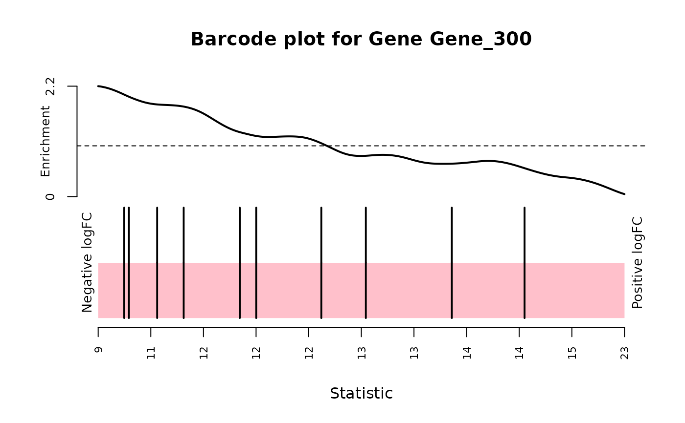

Create a barcode plot for a hit. A barcode plot displays if the hit is differentially up or down regulated. If most of the vertical line are on the left side the gene associated to the barcodes is down regulated otherwise is up regulated.
Arguments
- screenR_Object
The ScreenR object obtained using the
create_screenr_object- matrix_model
The matrix that will be used to perform the linear model analysis. It is created using model.matrix.
- contrast
An object created with
makeContrastsfunction.- number_barcode
Number of barcode that as to be differentially expressed (DE) in order to consider the associated gene DE. Example a gene is associated with 10 shRNA we consider a gene DE if it has at least number_barcode = 5 shRNA DE.
- gene
The name of the gene that has to be plot
- quantile
Quantile to display on the plot
- labels
The label to be displayed on the quantile side
Examples
object <- get0("object", envir = asNamespace("ScreenR"))
matrix_model <- model.matrix(~ slot(object, "groups"))
colnames(matrix_model) <- c("Control", "T1_T2", "Treated")
contrast <- limma::makeContrasts(Treated - Control, levels = matrix_model)
plot_barcode_hit(object, matrix_model,
contrast = contrast,
gene = "Gene_300"
)
#> Using classic mode.

#> NULL